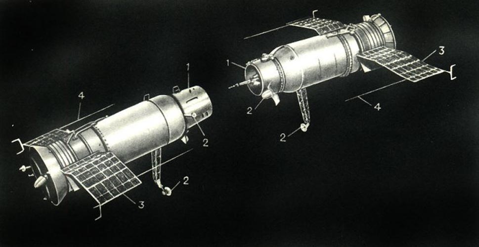
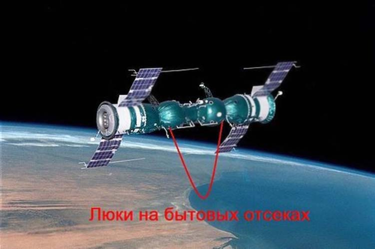

«Космос-186» и «Космос-188»
Космос-186 — советский беспилотный космический корабль типа «Союз» (7К-ОК). Корабль был запущен 27 октября 1967 года для осуществления автоматической стыковки с кораблём «Космос-188».
«Космос-186» и «Космос-188» 30 октября 1967 года произвели первую автоматическую стыковку в мире.
Ввиду принятой в СССР секретности при отработочных полётах корабли получили название «Космос» и именовались спутниками, а также изображались в советской пропагандистской печати в конфигурации, не соответствующей реальной компоновке кораблей серии.
Первым был запущен «Космос-186». Он являлся «активным» кораблём, то есть он должен был найти с помощью радиолокационной антенны «пассивный» корабль «Космос-188», сблизиться и пристыковаться.
30 октября 1967 года во время пролёта корабля «Космос-186» над космодромом был запущен «Космос-188» в той же плоскости орбиты, но с опережением на 24 км.
Для осуществления стыковки необходима высокая точность вывода на орбиту, так как автоматическая система стыковки может работать только до определённого расстояния между стыкуемыми кораблями: 24 км не превышало этого предела.
Первым был запущен «Космос-186». Он являлся «активным» кораблём, то есть он должен был найти с помощью радиолокационной антенны «пассивный» корабль «Космос-188», сблизиться и пристыковаться.
30 октября 1967 года во время пролёта корабля «Космос-186» над космодромом был запущен «Космос-188» в той же плоскости орбиты, но с опережением на 24 км.
Для осуществления стыковки необходима высокая точность вывода на орбиту, так как автоматическая система стыковки может работать только до определённого расстояния между стыкуемыми кораблями: 24 км не превышало этого предела.
Командой из центра управления были активированы системы ориентации, системы автоматического управления и счётно-решающие устройства. После обнаружения «пассивного» корабля «Космос-188» «активным» «Космос-186» счётно-решающие устройства последнего начали высчитывать необходимое приращение скорости с помощью ранее автоматически полученных данных о расстоянии между кораблями, направлении линии визирования и относительной скорости.
Последний этап стыковки называется причаливанием. Во время причаливания скорость сближения кораблей составила 0,5—1 м/с. Затем произошл а сама стыковка: штанга стыковочного узла «Космоса-186» попала в конусообразный захват «Космоса-188».
Состыкованными корабли летали 3,5 часа, совершив около 2 витков вокруг Земли. Затем по команде с Земли они расстыковались. «Космос-186» благополучно приземлился; на «Космосе-188» сработала система автоматического подрыва и уничтожила его.
Тем не менее, стыковка не была полностью успешной — корабли выполнили механическую стыковку, но не смогли выполнить электрическую.
Характеристики
Масса 6 000 кг